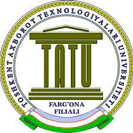

МУҲAММAДAЛ-ХОРAЗМИЙ
НОМИДAГИ ТОШКЕНТ
АХБОРОТТЕХНОЛОГИЯЛАРИ
УНИВЕРСИТЕТИ
ФAРҒОНA ФИЛИAЛИ

АХБОРОТХАТИ
2021 йил 16 апрель куни
Муҳаммад ал-Хоразмий номидаги
Тошкент ахборот технологиялари
университети Фарғона филиали
“Ахборот-коммуникация
технологиялари ва
телекоммуникацияларнинг
замонавий муаммолари
ва ечимлари” мавзуcидаги
Республика илмий-техник
online анжуманини ўтказади.
Муҳаммад ал-Хоразмий номидаги
Тошкент ахборот технологиялари
университети Фарғона филиали
“Ахборот-коммуникация
технологиялари ва
телекоммуникацияларнинг
замонавий муаммолари
ва ечимлари” мавзуcидаги
Республика илмий-техник
online анжуманини ўтказади.
ТАШКИЛИЙ ҚЎМИТА МАНЗИЛИ
Ўзбекистон Республикаси, 150118,
Фарғона шаҳри, Мустақиллик кўчаси,
185-уй Муҳаммад ал-Хоразмий номидаги
ТАТУ Фарғона филиали.
Тел.: (8-373) 226-82-09.
Фарғона шаҳри, Мустақиллик кўчаси,
185-уй Муҳаммад ал-Хоразмий номидаги
ТАТУ Фарғона филиали.
Тел.: (8-373) 226-82-09.
Координатор:
НУРДИНОВА РОЗИЯХОН АБДИХАЛИКОВНА
тел.:+(99890)302-16-75,
+(99873)226-94-03,
+(99873)226-82-09
+(99873)226-94-03,
+(99873)226-82-09
“Ахборот-коммуникация технологиялари
ва телекоммуникацияларнинг замонавий
муаммолари ва ечимлари” мавзуcидаги
Республика илмий-техник online анжумани
Анжуман Zoom платформасида 2021 йил 16 апрель
санасида соат 10:30 да бошланади.
санасида соат 10:30 да бошланади.
Анжуман қуйидаги шўъбалар бўйича фаолият юритади:
-
1. Дастурий маҳсулотлар ишлаб чиқаришнинг долзарб
муаммолари ва уларнинг ечимлари
(mansurbek_uzb@mail.ru,99-999-22-66) -
2. Телекоммуникация ва ахборот хавфсизлигининг
долзарб муаммолари ва ечимлари
(ergashevshoh1992@gmail.com,91-149-55-42) -
3. Замонавий педагогик-психологик технологиялар.
Олий ва ўрта таълим тизими муаммолари ва уларнинг
ечимлари (kh_abbos@mail.ru,99-997-63-40) -
4. Рақамли иқтисодиётнинг жамиятни ривожланишидаги,
ҳамда ҳудудий муаммоларни ечишдаги аҳамияти (Abdumalikk@mail.ru,90-631-60-58) Анжуманнинг ишчи тиллари: ўзбек, рус ва инглиз.
АНЖУМАН МАЪРУЗАЛАРИНИ
РАСМИЙЛАШТИРИШГА ТАЛАБЛАР
-
1.Маъруза матнлари оригинал нусха тилида чоп этилади.
Маъруза матн ҳажми 3 бетгача. -
2. Матнни А4 форматли вароқда қуйидаги ҳошиялар билан
жойлаштириш лозим: юқори ҳошия – 2 см, қуйи ҳошия – 2 см,
чап ҳошия – 3,0 см, ўнг ҳошия – 2 см. Сатрлараро интервал 1,5
саҳифалар рақамланмайди. Тезислар матни MS Word(*.docx)
матн муҳарририда, шрифт тури Times New Roman стандартида,
14 ўлчамда расмийлаштирилади. -
3. Расмий талаб:
-маъруза номи катта ҳарфлар билан бўғинларни ўтказмасдан
сатрнинг ўрта қисмида ёзилиши керак;
-1 интервал ташланиб муаллиф(лар)нинг исми, шарифи,
фамилияси, иш жойи;
- бир интервал ташланиб маъруза матни келтирилади
(ёзиш тили муаллифнинг танлови бўйича);
-матндан сўнг адабиётлар рўйхати кўрсатилади;
- мақолаларни шўъбаларда кўрсатилган электрон почта ёки
телеграм рақамига 10 апрелгача юбориш лозим;
(кечиктирилган материаллар қабул қилинмайди)
- маърузалар матни ва тезисларда келтирилган маълумотларга
муаллифнинг шахсан ўзи жавобгар ҳисобланади.